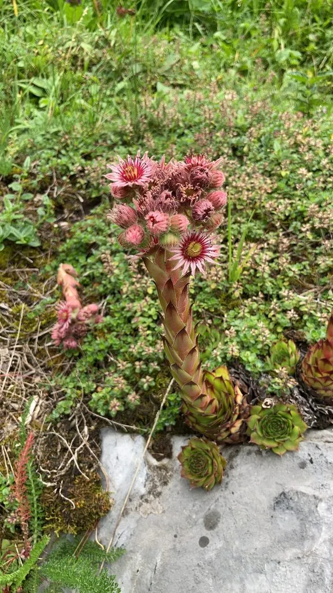

多肉植物 · 植物界
观音莲 Sempervivum tectorum

景天科长生草属莲座多肉，叶尖紫红如莲座，耐寒力强，开花后母株死亡，原产欧洲高山地区，常群生于岩石缝隙。
- 分类
- 门被子植物门纲木兰纲目虎耳草目科景天科属长生草属
- 栖息环境
- 欧洲阿尔卑斯山等高寒山地的岩石缝隙，耐寒、喜光、耐旱
- 地理分布
- 原产欧洲中部与南部高山地区，世界各地盆栽或庭院栽培
- 保护级别
- 暂无评估
物种志
观音莲为景天科长生草属多肉植物，植株呈紧密的莲座状，直径 5–15 厘米，叶片肉质、披针形，先端尖，灰绿色至蓝绿色，叶尖常呈紫红色，叶缘有细毛。花葶自莲座中心抽出，花星形，粉红或黄绿色，花期 6–8 月；开花后母株会逐渐枯萎死亡。
观音莲原产欧洲阿尔卑斯山等高寒地区的岩石缝隙，耐寒力很强，可耐 -20℃ 左右低温，喜阳光充足、凉爽干燥和排水良好的环境。它靠基部抽生的匍匐枝上的小莲座繁殖，容易长成密集的群落，覆盖岩石和屋顶，因此英文名意为“屋顶草”。夏季高温时需适当遮阴，避免叶心积水；开花后母株死亡是正常现象，可提前取下小侧芽繁殖。
形态与习性
- 株高莲座直径 5–15 厘米，高约 5–8 厘米
- 花期6–8 月，花星形，粉红或黄绿色
- 果期开花后母株枯萎死亡
- 光照喜充足阳光，夏季适度遮阴
- 水分耐旱，忌积水，夏季少浇
- 土壤颗粒为主、排水良好的矿质土
- 繁殖匍匐枝小莲座分株
趣味知识
- 观音莲开花后母株会枯萎死亡，可提前取侧芽繁殖。
- 它耐寒力强，可耐 -20℃ 左右低温，在欧洲常被种在屋顶上。
- 匍匐枝顶端会长出小莲座，落地后即可长成新植株。
- 叶尖的紫红色在光照充足、温差较大时更明显。